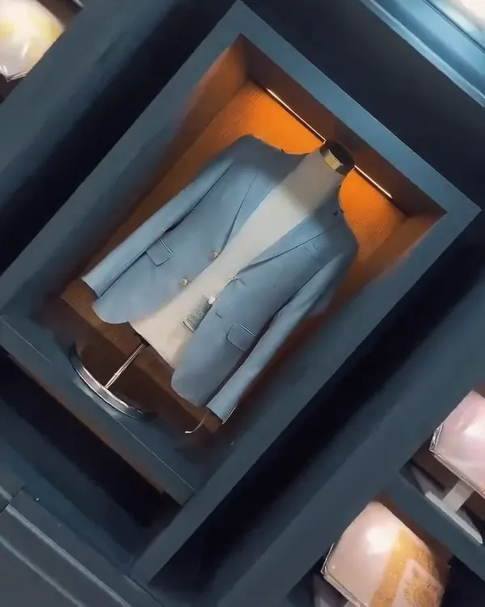
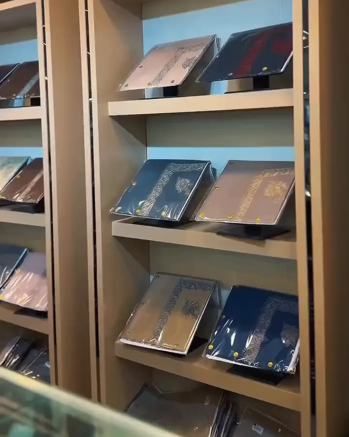
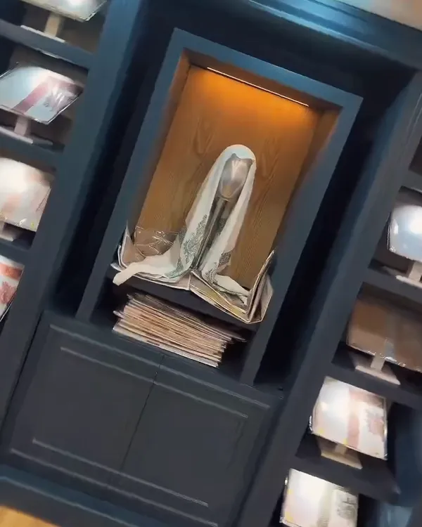
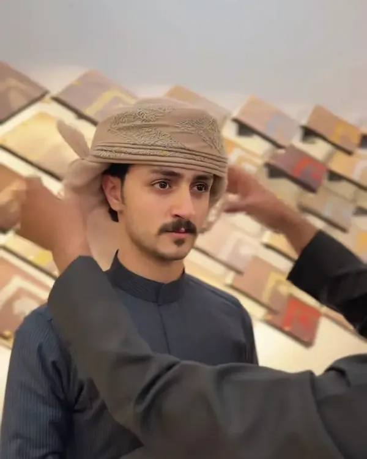
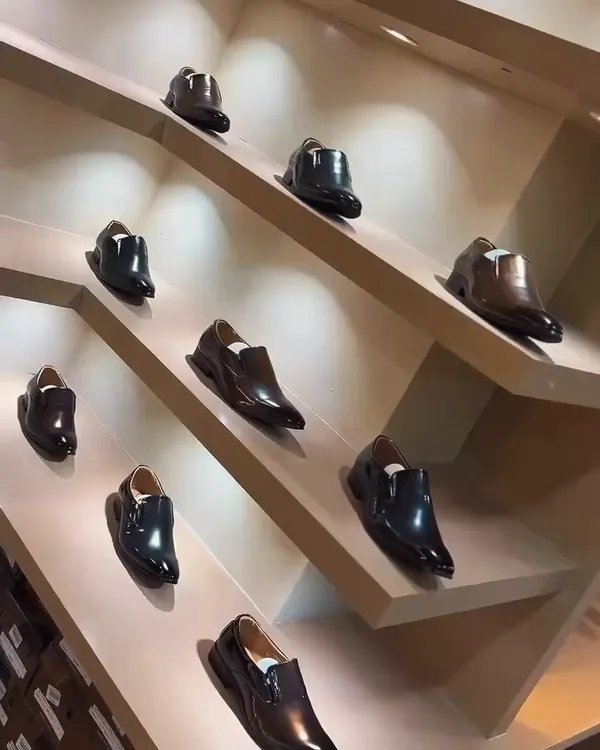
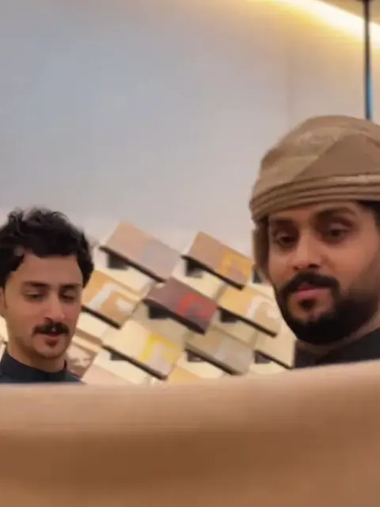
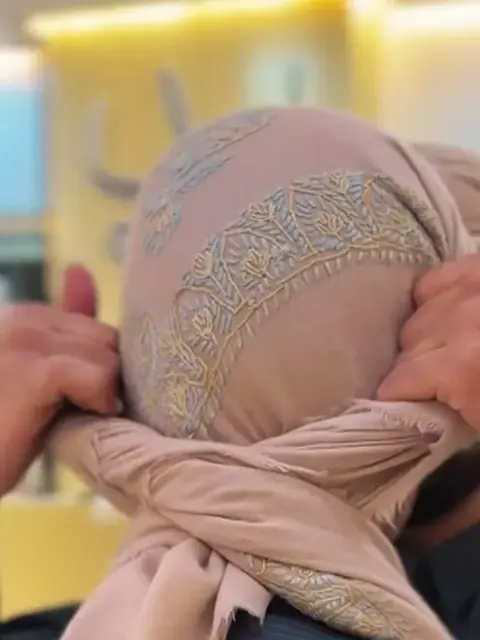
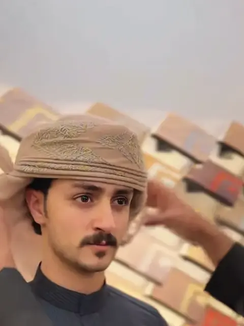

٠١
أكوات تركية وإيطالية
قصّات كلاسيكية وخامات شتوية ثقيلة.
محلات الأسمر · صنعاء
أكوات تركية وإيطالية، وشيلان بشمينا.
من الداخل
صالة الأسمر
محلات الأسمر
أكوات تركية وإيطالية مختارة قطعة قطعة، وشيلان صوف وبشمينا، وقبع يمني يُلفّ على أصوله. فرعين في صنعاء، ونفس الذوق في الاثنين.

المجموعات

٠١
قصّات كلاسيكية وخامات شتوية ثقيلة.

٠٢
صوف وكشمير، ألوان هادئة وأصيلة.

٠٣
شال يُلفّ على أصوله، ونعلّمك الطريقة.

٠٤
تكمّل الطقم، من المناسبات للدوام.
تجربة خاصة
صالة هادئة في فرع الرويشان، نعرض فيها أفخم القطع ونخدمك فيها شخصياً.
#والقبع_عليا
أسهل طريقة… بثلاث خطوات



فيديوهات الأسمر
مقاطع حقيقية من محلاتنا: تنسيق، قبع، وجديد الأكوات والشيلان.
«شغفي إبراز الأناقة اليمنية الأصيلة.»الأسمر — مؤسس محلات الأسمر · ٣٢٣ ألف متابع على انستقرام
زورونا
شارع الأربعين – جولة الثقافة – شارع النهدين، جوار معرض اللورد
783 669 665جولة الرويشان – مول العرب (الفرع الجديد)
784 669 665